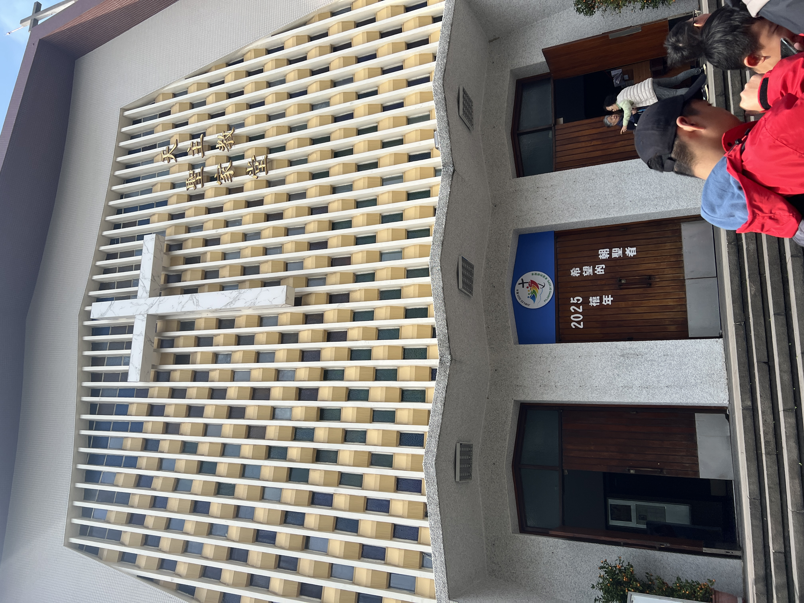
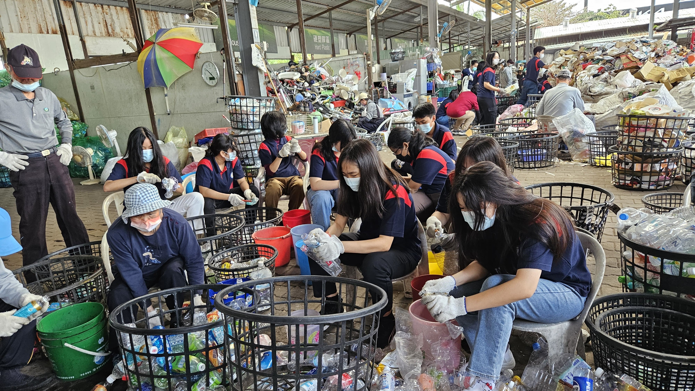

Agama
Saya berkunjung ke gereja di Taipei Holy Family Catholic Church pada hari pertama. Gereja yang kami kunjungi sungguh unik meskipun isinya cukup simpel, namun gereja nya masih sangat indah. Terdapat patung Yosef dan Bunda Maria, kemudian terdapat kaca patri ilustrasi yang menggambarkan peristiwa kehidupan Yesus. Gereja ini didirikan pada Tahun 1952 oleh dua orang kanada dan seorang pendeta Italia. Gereja ini adalah struktur katolik terbesar di Taiwan dan pindah ke lokasi saat ini pada tahun 1964.
Pada hari keempat, kami melakukan community service bersama. Kegiatan yang kami lakukan adalah memilah sampah di Tzu Chi Resource Center. Tujuannya adalah untuk meningkatkan kesadaran tentang daur ulang. Saya melaksanakannya dengan memilah sampah berdasarkan jenisnya. Menurutku tujuanku telah tercapai sebab dengan melakukan kegiatan ini dapat membuatku sadar bahwa daur ulang tidaklah gampang dan saya sadar bahwa saya harus mengurangi penggunaan sampah plastik dan menjaga lingkungan lebih baik lagi.